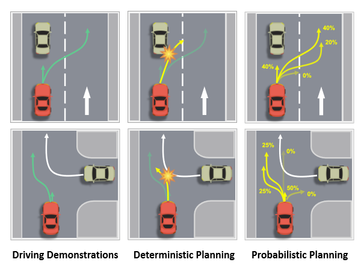
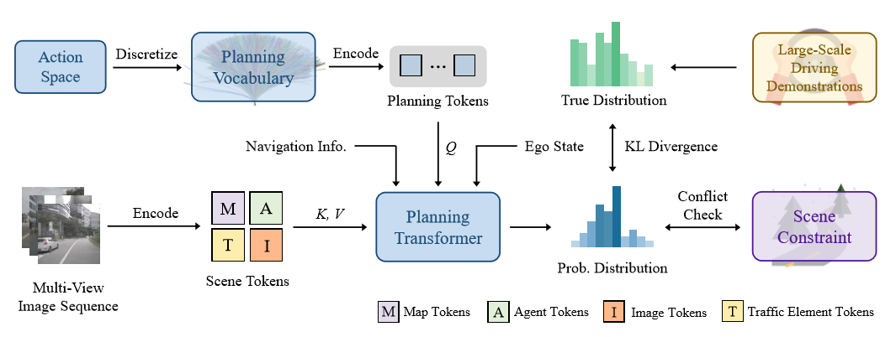
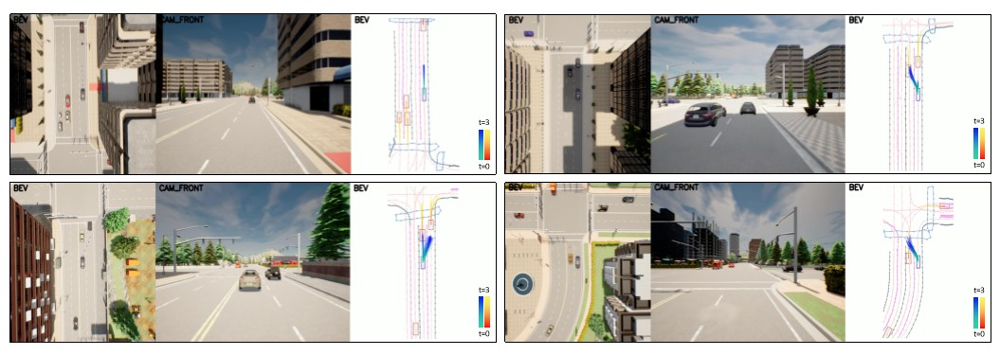
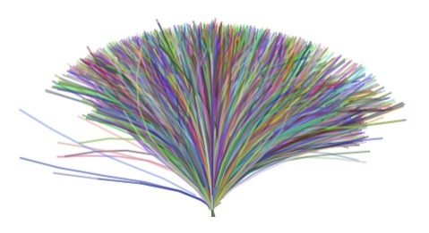

Bo Jiang1,*,◇、Shaoyu Chen2,*、Hao Gao1,◇、Bencheng Liao1,◇、Qian Zhang2、Wenyu Liu1、Xinggang Wang1,✉
1Huazhong University of Science and Technology 2Horizon Robotics
{bjiang, ghao, bcliao, liuwy, xgwang}@hust.edu.cn {shaoyu.chen, qian01.zhang}@horizon.auto
arXiv:2402.13243v2 [cs.CV]、2026年4月17日。ICLR 2026 会議論文として採録
脚注：* 同等の貢献。◇ Horizon Robotics でのインターンシップ中に行った研究。✉ 責任著者。
翻訳について：原文 PDF は
30_VADv2_2402.13243.pdf（全 15 ページ）。本文、図の説明、図中ラベル、表、脚注、付録を訳出し、論文タイトルと参考文献は原文のまま掲載。図は原図を掲載し、英語ラベルの日本語訳を併記した。数式・数値・引用番号・コードの識別子は原文を維持。原文の記述に関する補足は「訳注」と明示し、本文と区別している。
大規模な運転デモンストレーションから人間らしい運転方策を学習することは有望であるが、計画（プランニング）の不確実性と非決定的な性質がそれを困難にしている。既存の学習ベースの計画手法は、行動を直接回帰する決定論的なパラダイムに従っており、不確実性の問題に対処できていない。本研究では、エンドツーエンド自動運転のための確率的計画モデル VADv2 を提案する。行動空間から確率分布への写像をモデル化するために、確率場関数（probabilistic field function）を用いる。計画の行動空間は高次元の連続的な時空間であり扱いが難しいため、まず計画行動空間を大規模な計画語彙（planning vocabulary）へ離散化し、次に計画語彙を計画トークンへとトークン化する。計画トークンはシーントークンと相互作用し、行動の確率分布を出力する。この分布の教師信号には大量の運転デモンストレーションを活用する。VADv2 は CARLA Town05 ベンチマークにおいて最先端の閉ループ性能を達成して既存手法を大きく上回り、また最近の Bench2Drive ベンチマークでも首位に立つ。さらに NAVSIM および大規模な 3DGS ベースのベンチマークで包括的な評価を行い、実世界応用における有効性を示す。コードは https://github.com/hustvl/VAD で公開されている。
エンドツーエンド自動運転は現在、重要な研究テーマである。実世界のシナリオにおける大規模な人間の運転デモンストレーションは容易に入手できる。こうした大量のデモンストレーションから、車両制御のための人間らしい運転方策を導出することは非常に有望である。しかし、計画の不確実性と非決定的な性質のため、運転デモンストレーションから運転知識を抽出することは困難である。このような不確実性を示すために、図1に 2 つのシナリオを示し、以下のように説明する。1）他車への追従：人間のドライバーは、現在の車線を維持する、あるいは車線変更して追い越すなど、さまざまな妥当な運転操作を示す。2）対向車との相互作用：人間のドライバーは、譲る（yield）か追い越すかという 2 つの運転操作の候補に直面する。統計的な観点からは、行動（タイミングや速度を含む）は非常に確率的であり、正確にはモデル化できない多数の潜在要因の影響を受けている。
既存の学習ベースの計画手法（Jiang et al., 2023; Hu et al., 2022c; Jia et al., 2023b; Prakash et al., 2021b; Hu et al., 2022a; Zhang et al., 2021）は、行動を直接回帰する決定論的パラダイムに従っている。回帰の対象は、（Jiang et al., 2023; Hu et al., 2022c; Jia et al., 2023b; Prakash et al., 2021b）では将来軌道、（Hu et al., 2022a; Zhang et al., 2021）では制御信号（加速度と操舵）である。このようなパラダイムは運転シーンと行動の間に決定論的な関係が存在することを仮定しているが、実際にはそうではない。人間の運転行動のばらつきが、回帰対象の曖昧さを引き起こす。特に実行可能解の空間が非凸である場合、すなわち複数の実行可能解が存在する場合（図1参照）、決定論的モデリングはそのようなケースを適切に扱えず、中間的な行動を出力してしまい、潜在的な安全上のリスクを招くおそれがある。

図1：計画には不確実性が存在する。運転シーンと行動の間には決定論的な関係は存在しない。決定論的計画は、特に実行可能解の空間が非凸である場合に、このような不確実性をモデル化できない。VADv2 は確率的計画に基づいており、大規模な運転デモンストレーションから、シーンを条件とする行動の確率分布を学習する。
図中ラベル：Driving Demonstrations＝運転デモンストレーション、Deterministic Planning＝決定論的計画、Probabilistic Planning＝確率的計画
本研究では、計画の不確実性に対処するために確率的計画を提案する。計画方策を、シーンを条件とする非定常な確率過程としてモデル化し、\( p(\boldsymbol{a}|\boldsymbol{o}) \) と定式化する。ここで \( \boldsymbol{o} \) は運転シーンの過去および現在の観測、\( \boldsymbol{a} \) は計画行動の候補である。決定論的計画と比較して、確率的計画は計画の不確実性に対してより頑健であり、非凸な実行可能解空間をモデル化できるため、より正確で安全な計画を実現する。
計画行動空間から確率分布への写像をモデル化するために、確率場関数を用いる。行動空間は高次元の連続的な時空間であり扱いが難しいため、まず計画行動空間を大規模な計画語彙へ離散化し、次に計画語彙を計画トークンへとトークン化する。計画トークンはシーントークンと相互作用し、行動の確率分布を出力する。この分布の教師信号には大量の運転デモンストレーションを活用する。
確率的計画には、さらに 2 つの利点がある。第一に、シーン情報に基づいて最適な行動を回帰しなければならない決定論的計画とは異なり、確率的計画は各行動と運転シーンとの相関をモデル化する。異なる行動を順位付けし、高スコアの行動をサンプリングするだけである。このようなモデリングははるかに単純である。第二に、確率的計画は推論段階で柔軟である。マルチモードの計画結果を出力し、ルールベースや最適化ベースの計画手法と容易に組み合わせられる。行動空間全体にわたる分布をモデル化しているため、他の計画行動の候補を計画語彙に柔軟に追加して評価することができる。
確率的計画に基づき、エンドツーエンド運転モデル VADv2 を提示する。VADv2 は全周囲カメラの画像系列をストリーミング方式で入力とし、センサデータと計画行動空間をトークン化し、行動の確率分布を出力して、車両を制御するための行動を 1 つサンプリングする。カメラセンサのみを用いて、VADv2 は CARLA Town05 ベンチマークで最先端の閉ループ性能を達成して既存手法を大きく上回り、また最近の Bench2Drive ベンチマークでも首位に立つ。さらに NAVSIM および我々の 3DGS ベースのベンチマークでも高い計画性能を示す。VADv2 は、違反を回避するための後処理としてのルールベースのラッパーがなくても、完全なエンドツーエンド方式で安定して動作する。
本研究の貢献は次のようにまとめられる。
知覚。知覚は自動運転を実現するための最初のステップであり、運転シーンの統一的な表現は下流タスクへの容易な統合に有益である。鳥瞰図（Bird's Eye View, BEV）表現は近年一般的な戦略となっており、効果的なシーン特徴の符号化とマルチモーダルなデータ融合を可能にしている。LSS（Philion & Fidler, 2020）は、画像ピクセルの深度を明示的に予測することで透視ビューから BEV への変換を実現した先駆的な研究である。一方 BEVFormer（Li et al., 2022c）は、空間的および時間的な注意機構を設計することで明示的な深度予測を回避している。後続の研究（Li et al., 2022b; Wang et al., 2023a）は、時間的モデリングと BEV 変換の戦略を継続的に改良している。ベクトル化地図構築（vectorized mapping）に関しては、HDMapNet（Li et al., 2022a）が後処理によって車線セグメンテーションをベクトル地図に変換する。VectorMapNet（Liu et al., 2022）は自己回帰的にベクトル地図要素を予測する。MapTR（Liao et al., 2022; 2023b）は置換等価性と階層的マッチング戦略を導入し、地図構築性能を大きく向上させた。LaneGAP（Liao et al., 2023a）は車線グラフに対して経路単位（path-wise）のモデリングを導入している。
動き予測。動き予測は、他の交通参加者の将来軌道を予測し、自車両が情報に基づいた計画判断を行うのを支援することを目的とする。従来の動き予測手法は、過去の軌道や高精度地図などの入力を用いて将来軌道を予測する（Gao et al., 2020; Liu et al., 2021）。しかし、最近のエンドツーエンド手法（Gu et al., 2022; Jiang et al., 2022）は知覚と動き予測を同時に行う。将来の動きを密な占有（occupancy）とフロー場として表現する研究（Hu et al., 2021; Zhang et al., 2022）もあれば、エージェント単位のマルチモーダル軌道を予測する研究（Gu et al., 2022; Jiang et al., 2022）もある。別の研究の系統では、軌道予測を回帰タスクではなく分類問題として再定式化している。Trajeglish（Philion et al., 2023）は K-disk サンプリングを導入してコンパクトな 1 ステップの動き語彙を構築し、k-means と比較して低い離散化誤差を達成している。MotionLM（Seff et al., 2023）は各 1 ステップの行動を縦方向成分と横方向成分に分解し、軸に沿った一様量子化を適用する。このような 1 ステップのモデリングはコンパクトな表現と小さな語彙を可能にするが、反復的なロールアウトは誤差の蓄積を招き、物理的制約に違反する軌道を生成するおそれがある。対照的に、VADv2 の各行動トークンは完全な軌道を表しており、物理的に実行可能な動きプリミティブを保証するとともに、誤差の蓄積なしにワンショットで計画することを可能にする。
計画。学習ベースの計画は、そのデータ駆動型の性質と、データ量の増加に伴う優れた性能により、近年大きな可能性を示している。初期の試み（Codevilla et al., 2019; Prakash et al., 2021a）は完全なブラックボックスの考え方を採っており、センサデータを直接用いて制御信号を予測する。しかし、この戦略は解釈性に欠け、最適化が難しい。加えて、閉ループのシミュレーション環境で運転行動を自律的に探索することにより、強化学習と計画を組み合わせた研究も数多く存在する（Zhang et al., 2021; Gao et al., 2025）。模倣学習（Chekroun et al., 2021; Hu et al., 2022b; Ma et al., 2025）は別の研究方向であり、モデルはエキスパートの運転行動を学習して良好な計画性能を達成し、人間に近い運転スタイルを身につける。
UniAD（Hu et al., 2022c）は複数の知覚・予測タスクを統合して計画性能を向上させる。VAD（Jiang et al., 2023）は、計画のためのベクトル化シーン表現の可能性を探り、密な地図を不要にしている。Diffusion Planner（Zheng et al., 2025）は反復的な拡散によって自車と他のエージェントの動きを同時に予測するが、真値の知覚結果と HD 地図に依存している。DiffusionDrive（Liao et al., 2025）は打ち切り拡散（truncated diffusion）によってノイズ除去過程を高速化するが、限られた事前定義の軌道アンカーが生成品質を制約するおそれがあり、アンカー数を増やすと追加の計算コストが生じる。GoalFlow（Xing et al., 2025）は計画を、ゴール点の選択と、それに続くフローマッチングによる軌道生成に分解するが、単一のゴール点に依存することが軌道の多様性に影響しうるうえ、手作りの軌道選択ルールが汎用性とスケーラビリティを制限している。
自動運転における大規模言語モデル。最近の研究は、大規模言語モデル（LLM）と自動運転の組み合わせを探求している（Sha et al., 2023; Xu et al., 2023）。一つの系統の研究は、質問応答を通じた運転シーンの理解と評価に LLM を利用する（Chen et al., 2023; Sima et al., 2024）。別のアプローチはさらに一歩進み、LLM を直接計画に利用する（Wang et al., 2023b; 2024）。しかし、現在の LLM ベースの計画手法は推論速度の制約を避けられず、自動運転応用におけるリアルタイム展開の実用性が制限されている。VADv2 は、言語モデリングにも存在する不確実性の問題に対処するため、GPT（Achiam et al., 2023）から着想を得ている。特定の文脈が与えられたとき次の単語は非決定的であり、LLM は大規模コーパスから文脈を条件とする次の単語の確率分布を学習し、その分布から単語を 1 つサンプリングする。LLM に着想を得て、VADv2 は計画方策を、シーンを条件とする非定常な確率過程としてモデル化する。VADv2 は行動空間を離散化して計画語彙を生成し、大規模な運転デモンストレーションに基づいて確率分布を近似し、各時刻においてその分布から行動を 1 つサンプリングして車両を制御する。

図2：VADv2 の全体アーキテクチャ。VADv2 はマルチビュー画像系列をストリーミング方式で入力とし、センサデータと計画行動空間をトークン化し、行動の確率分布を出力して、車両を制御するための行動を 1 つサンプリングする。予測された分布の教師信号には、大規模な運転デモンストレーションとシーン制約を用いる。
図中ラベル：Action Space＝行動空間、Discretize＝離散化、Planning Vocabulary＝計画語彙、Encode＝符号化、Planning Tokens＝計画トークン、True Distribution＝真の分布、Large-Scale Driving Demonstrations＝大規模な運転デモンストレーション、Navigation Info.＝ナビゲーション情報、Ego State＝自車状態、KL Divergence＝KL ダイバージェンス、Multi-View Image Sequence＝マルチビュー画像系列、Scene Tokens＝シーントークン、Planning Transformer＝計画 Transformer、Prob. Distribution＝確率分布、Conflict Check＝衝突チェック、Scene Constraint＝シーン制約、Map Tokens＝地図トークン、Agent Tokens＝エージェントトークン、Image Tokens＝画像トークン、Traffic Element Tokens＝交通要素トークン
VADv2 の全体的な枠組みを図2に示す。VADv2 はマルチビュー画像系列をストリーミング方式で入力とし、センサデータをシーントークンの埋め込みに変換し、行動の確率分布を出力して、車両を制御するための行動を 1 つサンプリングする。予測された分布の教師信号には、大規模な運転デモンストレーションとシーン制約を用いる。
VADv2 はシーンエンコーダを用いて、センサデータをインスタンスレベルのトークン埋め込み \( E_{\text{scene}} \in \mathbb{R}^{M\times D} \) に変換し、高レベルの情報を明示的に抽出する。ここで \( M \) はシーントークンの数、\( D \) は特徴次元である。具体的には、\( E_{\text{scene}} \) は 4 種類のシーントークン、すなわち地図トークン、エージェントトークン、交通要素トークン、画像トークンを含む。
BEV エンコーダ。まず BEV エンコーダ（Li et al., 2022c）を用いて、マルチビュー画像特徴を透視ビューから鳥瞰図へ変換し、BEV 空間の特徴マップを生成する。この特徴マップは、インスタンスレベルの地図特徴とエージェント特徴を学習するための基盤となる。
地図トークン。BEV 特徴マップから運転シーンのベクトル化地図要素（車線中心線、車線区分線、道路境界、横断歩道を含む）を学習するために、一連の地図トークン（Liao et al., 2023b）を導入する。
エージェントトークン。加えて、交通参加者の動き情報（位置、向き、サイズ、速度、将来軌道を含む）を予測するために、一群のエージェントトークン（Jiang et al., 2023）を採用する。
交通要素トークン。交通信号も計画において重要な役割を果たす。CARLA では、信号機と一時停止標識の 2 種類の交通信号を考慮する。バックボーンから抽出された前方ビューの画像特徴を MLP でさらに符号化して交通要素トークンとし、これを用いて交通信号の状態を予測する。
画像トークン。上記のインスタンスレベルのトークンに加えて、前方ビューの画像特徴も画像トークンとして用いる。これらの画像トークンは計画のためのより密なシーン特徴を提供し、インスタンスレベルのトークンを補完する豊富な情報を捉える。
地図トークン、エージェントトークン、交通要素トークンは、それぞれ対応する教師信号で教師あり学習され、対応する高レベルの情報を明示的に符号化することが保証される。また、ナビゲーション情報と自車状態も MLP によって埋め込み \( (E_{\text{navi}}, E_{\text{state}}) \) に符号化される。まとめると、シーンエンコーダは疎なセンサデータを、よりコンパクトな高レベルのシーン特徴 \( (E_{\text{scene}}, E_{\text{navi}}, E_{\text{state}}) \) に変換し、これが後続の計画モジュールの基盤となる。
計画の不確実性に対処するため、確率的計画を提案する。計画方策を、シーンを条件とする非定常な確率過程としてモデル化し、\( p(\boldsymbol{a}|\boldsymbol{o}) \) と定式化する。ここで \( \boldsymbol{o} \) は観測されたシーン情報、\( \boldsymbol{a} \) は行動であり、将来の計画軌道のウェイポイント列として表される。
\[ \boldsymbol{o} = (E_{\text{scene}},\ E_{\text{navi}},\ E_{\text{state}}),\quad \boldsymbol{a} = (x_1,\ y_1,\ x_2,\ y_2,\ldots,\ x_T,\ y_T). \tag{1} \]
\( T \) はウェイポイントの数である。各ウェイポイント \( (x_i, y_i) \) は将来のタイムスタンプ \( t_i \) に対応する。
大規模な運転デモンストレーションに基づいて計画行動空間の確率分布を近似し、各時刻においてその分布から行動を 1 つサンプリングして車両を制御する。
計画行動空間は高次元の連続的な時空間であり、扱いが難しい。そこで、計画行動空間を大規模な計画語彙 \( \mathcal{V} = \{\boldsymbol{a}^i\}^N \) へと離散化する。ここで \( N \) は語彙サイズである。具体的には、運転デモンストレーション中のすべての計画行動を計画行動集合 \( \mathcal{S} \) として収集し、最遠軌道サンプリング（furthest trajectory sampling）を採用して、計画語彙となる \( N \) 個の代表的な行動を選択する。語彙のサンプリングアルゴリズムをアルゴリズム1に示す。\( \mathcal{V} \) の各計画行動は運転デモンストレーションからサンプリングされているため、自車両の運動学的制約を自然に満たす。すなわち、行動を制御信号（操舵、スロットル、ブレーキ）に変換したとき、制御信号の値は実行可能な範囲を超えない。デフォルトでは \( N \) は 4096 に設定する。
アルゴリズム1：計画語彙のサンプリング。
入力: 計画行動集合 S、計画語彙サイズ N
出力: 計画語彙 V
初期化: V ← ∅
for i = 1 to N − 1 do
if V == ∅ then
S の中から行動 a をランダムに選択
V ← V ∪ {a} 計画語彙に行動を追加
S ← S \ {a} 計画行動集合から行動を除去
end
max_dis = 0
for 軌道 a in S do
dis = calculate_distance(a, V)
if dis > max_dis then
max_dis = dis
â = a 現時点で最も遠い軌道を更新
end
end
V ← V ∪ {â}
end
Return: Vcalculate_distance は、行動 \( \boldsymbol{a} \) の終点と集合 \( \mathcal{V} \) 内のすべての行動の終点との距離を計算し、それらの距離のうち最小値を結果として返す。
確率 \( p(\boldsymbol{a}) \) は \( \boldsymbol{a} \) に関して連続であり、\( \boldsymbol{a} \) の小さな摂動に対して鈍感であると仮定する。すなわち \( \lim_{\Delta\boldsymbol{a}\to 0}\left(p(\boldsymbol{a}) - p(\boldsymbol{a}+\Delta\boldsymbol{a})\right) = 0 \) である。5 次元空間上の連続な放射輝度場をモデル化する NeRF（Mildenhall et al., 2020）に着想を得て、行動空間から確率分布への連続な写像をモデル化するために確率場を用いる。
具体的には、まず各行動（軌道のウェイポイント）を高次元の計画トークン埋め込み \( E(\boldsymbol{a}) \) に符号化する。
\[ \begin{aligned} &E(\boldsymbol{a}) = \big(\Gamma(x_i),\ \Gamma(y_i)\big)_{i=1}^{T},\quad \Gamma(\text{pos}) = \big(\gamma(\text{pos},\ j)\big)_{j=0}^{L-1},\\ &\gamma(\text{pos},\ j) = \big(\cos(\text{pos}/10000^{2\pi j/L}),\ \sin(\text{pos}/10000^{2\pi j/L})\big). \end{aligned} \tag{2} \]
\( \Gamma \) は各座標を \( \mathbb{R} \) から高次元の埋め込み空間 \( \mathbb{R}^{2L} \) へ写像する符号化関数であり、軌道 \( \boldsymbol{a} \) の各座標値に個別に適用される。pos は位置（ウェイポイントの \( x \) 座標または \( y \) 座標を指す）を表す。これらの関数を用いて連続座標をより高次元の空間に写像し、より高周波の場関数をよりよく近似する。
次に、カスケード接続された Transformer デコーダ \( \phi \) がシーン情報 \( E_{\text{scene}} \) と相互作用し、ナビゲーション \( E_{\text{navi}} \) および自車状態 \( E_{\text{state}} \) と組み合わせて、各行動の確率を予測する。
\[ p(\boldsymbol{a}) = \sigma(\text{MLP}(\phi(E(\boldsymbol{a}),\ E_{\text{scene}}) + E_{\text{navi}} + E_{\text{state}})). \tag{3} \]
\( \sigma \) はシグモイド関数である。Transformer デコーダ \( \phi \) において、\( E(\boldsymbol{a}) \) はクエリとして、\( E_{\text{scene}} \) はキーおよびバリューとして機能する。\( E(\boldsymbol{a}) \)、\( E_{\text{navi}} \)、\( E_{\text{state}} \)、および MLP の出力は同じ次元（\( 1\times D \)）を持つ。
VADv2 は、分布損失、衝突損失、シーントークン損失の 3 種類の教師信号で学習する。
分布損失。大規模な運転デモンストレーションから確率分布を学習する。予測分布とデータの分布との差を最小化するために KL ダイバージェンスを用いる。
\[ \mathcal{L}_{\text{distribution}} = D_{\text{KL}}(p_{\text{data}}||p_{\text{pred}}) = \sum_{\boldsymbol{a}\in\mathcal{V}} p_{\text{data}}(\boldsymbol{a})\cdot\log\frac{p_{\text{data}}(\boldsymbol{a})}{p_{\text{pred}}(\boldsymbol{a})}, \tag{4} \]
\( p_{\text{data}}(\boldsymbol{a}) \) はデモンストレーションにおける出現頻度によって推定される。\( p_{\text{data}}(\boldsymbol{a}) \) は固定であるため、\( p_{\text{data}}(\boldsymbol{a})\cdot\log p_{\text{data}}(\boldsymbol{a}) \) は定数であり省略できる。したがって、KL ダイバージェンスの最小化は交差エントロピー損失の最適化と等価である。
\[ \mathcal{L}_{\text{distribution}} = -\sum_{\boldsymbol{a}\in\mathcal{V}} p_{\text{data}}(\boldsymbol{a})\cdot\log p_{\text{pred}}(\boldsymbol{a}). \tag{5} \]
デモンストレーション中の各フレームについて、計画語彙の中から真値の行動との L2 距離が最も小さい行動を選択する。この最もよく一致する行動にはラベル 1 を、それ以外のすべての行動には 0 を割り当てる。全フレームにわたって、各行動が最良一致となった回数を数え、総フレーム数で正規化することにより、ある行動 \( \boldsymbol{a} \) の出現頻度 \( p_{\text{data}}(\boldsymbol{a}) \) を推定する。このモデリングは大規模言語モデルで用いられる標準的な定式化と類似しており、そこでは真値のトークンに 1、それ以外に 0 のラベルを付け、交差エントロピー損失を用いて予測分布と経験分布との乖離を最小化する。
衝突損失。運転シーンの制約は、モデルが重要な運転の事前知識を学習し、予測される行動分布を正則化するのに役立つ。具体的には、計画語彙中のある行動が他のエージェントの真値の将来の動き、または道路境界と衝突する場合、それを負例として扱い、その確率を下げるための対応する損失を適用する。
\[ \mathcal{L}_{\text{conflict}} = \sum_{\boldsymbol{a}\in\mathcal{V}} \mathbb{1}_{\text{conflit}}(\boldsymbol{a})\cdot\log p_{\text{pred}}(\boldsymbol{a}). \tag{6} \]
\( \mathbb{1}_{\text{conflit}}(\boldsymbol{a}) \) は指示関数であり、\( \boldsymbol{a} \) に衝突が生じる場合は 1、そうでなければ 0 をとる。（訳注：添え字 conflit は原文のまま。conflict の誤植と思われる。）
シーントークン損失。地図トークン、エージェントトークン、交通要素トークンは、関連する高レベルの情報を明示的に符号化するよう、それぞれ対応する教師信号で教師あり学習される。
地図トークンの損失は MapTRv2（Liao et al., 2023b）と同じである。予測された地図点と真値の地図点との間の回帰損失の計算には \( l_1 \) 損失を採用する。地図の分類損失には Focal 損失を用いる。
エージェントトークンの損失は、検出損失と動き予測損失から構成される（Jiang et al., 2023）。エージェント属性（位置、向き、サイズなど）を予測するための回帰損失には \( l_1 \) 損失を、エージェントのクラスの予測には Focal 損失を用いる。真値のエージェントとマッチングされた各エージェントについて、\( K \) 本の将来軌道を予測し、最終変位誤差が最小（minFDE）となる軌道を代表予測として用いる。次に、この代表軌道と真値軌道との間の \( l_1 \) 損失を動きの回帰損失として計算する。加えて、マルチモーダルな動きの分類損失として Focal 損失を採用する。
| 手法 | 出典 | モダリティ | DS ↑ | RC ↑ | IS ↑ |
|---|---|---|---|---|---|
| Transfuser (Prakash et al., 2021b) | TPAMI'22 | C+L | 31.0 | 47.5 | 0.77 |
| ThinkTwice (Jia et al., 2023b) | CVPR'23 | C+L | 70.9 | 95.5 | 0.75 |
| DriveAdapter+TCP (Jia et al., 2023a) | ICCV'23 | C+L | 71.9 | 97.3 | 0.74 |
| DriveMLM (Wang et al., 2023b) | arXiv'23 | C+L | 76.1 | 98.1 | 0.78 |
| Roach (Zhang et al., 2021) | ICCV'21 | C | 41.6 | 96.4 | 0.43 |
| ST-P3 (Hu et al., 2022b) | ECCV'22 | C | 11.5 | 83.2 | - |
| MILE (Hu et al., 2022a) | NeurIPS'22 | C | 61.1 | 97.4 | 0.63 |
| Interfuser (Shao et al., 2023) | CoRL'22 | C | 68.3 | 95.0 | - |
| VAD (Jiang et al., 2023) | ICCV'23 | C | 30.3 | 75.2 | - |
| Rao et al. (2024) | TIV'24 | C | 74.9 | 94.6 | 0.77 |
| DriveCoT (Wang et al., 2024) | arXiv'24 | C | 73.6 | 96.8 | 0.76 |
| LeapVAD (Ma et al., 2025) | arXiv'25 | C | 73.7 | 95.7 | 0.78 |
| VADv2 | Ours | C | 85.1 | 98.4 | 0.87 |
表1：Town05 Long ベンチマークにおける閉ループ評価。
（訳注：モダリティの C はカメラ、L は LiDAR。Ours＝本研究。太字・下線は原表のとおり。）
| 手法 | 出典 | モダリティ | NC ↑ | DAC ↑ | TTC ↑ | Comf ↑ | EP ↑ | PDMS ↑ |
|---|---|---|---|---|---|---|---|---|
| UniAD (Hu et al., 2022c) | CVPR'23 | C | 97.8 | 91.9 | 92.9 | 100 | 78.8 | 83.4 |
| Transfuser (Prakash et al., 2021b) | PAMI'23 | C+L | 97.7 | 92.8 | 92.8 | 100 | 79.2 | 84.0 |
| PARA-Drive (Weng et al., 2024) | CVPR'24 | C | 97.9 | 92.4 | 93.0 | 99.8 | 79.3 | 84.0 |
| GoalFlow Xing et al. (2025) | CVPR'25 | C+L | 98.3 | 93.8 | 94.3 | 100 | 79.8 | 85.7 |
| Hydra-MDP++ Li et al. (2025a) | arXiv'25 | C | 97.6 | 96.0 | 93.1 | 100 | 80.4 | 86.6 |
| DiffusionDrive (Liao et al., 2025) | CVPR'25 | C+L | 98.2 | 96.2 | 94.7 | 100 | 82.2 | 88.1 |
| WoTE Li et al. (2025b) | ICCV'25 | C+L | 98.5 | 96.8 | 94.9 | 99.9 | 81.9 | 88.3 |
| Hydra-NeXt Li et al. (2025c) | arXiv'25 | C+L | 98.1 | 97.7 | 94.6 | 100 | 81.8 | 88.6 |
| VADv2 | Ours | C | 98.3 | 97.4 | 95.7 | 100 | 82.3 | 89.3 |
表2：閉ループ指標を用いた NAVSIM navtest 分割におけるエンドツーエンド計画の結果。
交通要素トークンは、信号機トークンと一時停止標識トークンの 2 つの部分から構成される。一方では、信号機トークンを MLP に入力し、信号機の状態（黄、赤、緑）と、その信号機が自車両に影響するかどうかを予測する。他方では、一時停止標識トークンも MLP に入力し、一時停止標識の領域と自車両との重なりを予測する。これらの予測の教師信号には Focal 損失を用いる。最終的な損失は次のように表される。
\[ \mathcal{L} = \mathcal{L}_{\text{distribution}} + \mathcal{L}_{\text{conflict}} + \mathcal{L}_{\text{token}}. \tag{7} \]
閉ループ推論では、分布から運転方策を柔軟に得ることができる。直観的には、各時刻において最も確率の高い行動をサンプリングし、PID 制御器を用いて選択した行動を制御信号（操舵、スロットル、ブレーキ）に変換する。
実世界の応用では、確率分布を最大限に活用するための、より頑健な戦略がある。良い実践例は、上位 K 個の行動を候補（proposal）としてサンプリングし、候補をフィルタリングするためのルールベースのラッパーと、きめ細かな軌道の洗練のための最適化ベースの後段ソルバーを採用することである。加えて、行動の確率はエンドツーエンドモデルがどの程度確信しているかを反映しており、従来のルールベースの計画・制御と学習ベースの計画・制御とを切り替えるための判定条件とみなすことができる。
CARLA ベンチマーク。まず CARLA（Dosovitskiy et al., 2017）シミュレータを用いて VADv2 の性能を評価する。広く採用されている Town05 および Bench2Drive Jia et al.（2024）ベンチマークで閉ループ評価を行う。具体的には、各ベンチマークはあらかじめ定義された複数の走行ルートを含む。閉ループ推論のシミュレーションおよび制御の周波数は 10 Hz である。VADv2 はマルチビュー画像系列をストリーミング方式で入力とし、3 秒先までの将来軌道を計画する。軌道は 6 個のウェイポイントからなる（すなわち \( T = 6 \)）。隣接する 2 つのウェイポイントの時間間隔は 0.5s である。VADv2 のデフォルトの特徴次元 \( D \) は 256 に設定する。すべての実験は 16 基の NVIDIA 4090 GPU で実施した。
| 手法 | NC ↑ | DAC ↑ | DDC ↑ | TL ↑ | EP ↑ | TTC ↑ | LK ↑ | HC ↑ | EC ↑ | EPDMS ↑ |
|---|---|---|---|---|---|---|---|---|---|---|
| Transfuser | 96.9 | 89.9 | 97.8 | 99.7 | 87.1 | 95.4 | 92.7 | 98.3 | 87.2 | 76.7 |
| HydraMDP++ | 97.2 | 97.5 | 99.4 | 99.6 | 83.1 | 96.5 | 94.4 | 98.2 | 70.9 | 81.4 |
| PRIX | 98.0 | 95.6 | 99.5 | 99.8 | 87.4 | 97.2 | 97.1 | 98.3 | 87.6 | 84.2 |
| VADv2 | 98.0 | 98.3 | 99.4 | 99.8 | 87.1 | 96.8 | 95.2 | 98.3 | 88.1 | 85.8 |
表3：拡張指標（Extended Metrics）を用いた NAVSIMv2 ベンチマークにおけるエンドツーエンド計画の結果。
（訳注：太字・下線は原表のとおり再現した。NC・TL・HC では同値の他手法が強調されておらず、HC では 98.2 に下線が付くなど、原表の強調には一貫しない箇所がある。）
| 手法 | 出典 | CR↓ | DCR↓ | SCR↓ | DR↓ | PDR↓ | HDR↓ | ADD↓ |
|---|---|---|---|---|---|---|---|---|
| TransFuser | TPAMI 22 | 0.320 | 0.273 | 0.047 | 0.235 | 0.188 | 0.047 | 0.263 |
| VAD | ICCV 23 | 0.335 | 0.273 | 0.062 | 0.314 | 0.255 | 0.059 | 0.304 |
| GenAD | ECCV 24 | 0.341 | 0.299 | 0.042 | 0.291 | 0.160 | 0.131 | 0.265 |
| VADv2 | Ours | 0.270 | 0.240 | 0.030 | 0.243 | 0.139 | 0.104 | 0.273 |
表4：3DGS ベースのベンチマークにおける他手法との閉ループ定量比較。
CARLA データ。Town05 ベンチマーク向けの運転デモンストレーションデータの生成については、CARLA の公式自律エージェントを用い、Town03、Town04、Town06、Town07、Town10 で走行ルートをランダムに生成して学習データを収集する。学習用に約 300 万クリップを収集した。各クリップについて、過去 1.6 秒間の 10Hz の 6 カメラ全周囲画像系列を、交通信号、交通参加者、および自車両の状態の情報とともに保存する。さらに、CARLA が提供する OpenStreetMap（Haklay & Weber, 2008）形式の地図を前処理することで、オンライン地図構築モジュールの学習用のベクトル化地図を得る。地図は学習時の真値としてのみ提供され、VADv2 は評価時に高精度地図を使用しない。
NAVSIM および 3DGS ベースのベンチマーク。実世界シナリオでの汎化能力をさらに検証するため、NAVSIM、NAVSIMv2（Dauner et al., 2024）、および大規模な 3DGS ベース（Kerbl et al., 2023）のベンチマークでも VADv2 を評価する。学習用に 2000 時間の実世界の人間による運転デモンストレーションを収集し、閉ループ評価には再構成された 337 の 3D Gaussian Splatting（3DGS）環境を利用する。各環境は、潜在的な衝突リスクを伴う密な交通での相互作用を捉えた 8s のシナリオを特徴としており、実世界の運転行動とマルチエージェント相互作用の代表的な場面を提供する。
フォトリアリスティックな 3DGS 再構成により、正確なエージェント軌道のモデル化と動的な環境のレンダリングが可能となり、実世界の運転条件をよく反映したテストベッドを提供する。紙面の制約のため、3DGS ベースのベンチマークの詳細は付録 A に記載する。また、VADv2 を実車両にも展開した。その結果は補足資料に示す。
CARLA ベンチマークでは、公式の閉ループ指標であるルート完遂率（Route Completion, RC）、違反スコア（Infraction Score, IS）、運転スコア（Driving Score, DS）を用いる。DS は RC と IS の積であり、主要な指標となる。ベンチマーク評価では、ほとんどの研究が違反を減らすためにルールベースのラッパーを採用している。公平な比較のため、Transfuser（Prakash et al., 2021b）と同様に、学習ベースの方策の上にルールベースのラッパーを採用するという一般的な慣行に従う。また、L2 変位誤差と衝突率を用いた開ループ評価も行う。ほとんどのアブレーションでは、評価がより高速かつ安定しているため、デフォルトで開ループ指標を採用する。開ループ評価のために、CARLA の公式自律エージェントを用いて Town05 Long ベンチマーク上の検証セットを生成し、結果はすべての検証サンプルにわたって平均する。
| 手法 | DS ↑ | SR ↑ | Effi ↑ | Comf ↑ |
|---|---|---|---|---|
| SparseDrive | 44.54 | 16.71 | 170.21 | 48.63 |
| MomAD | 47.91 | 18.11 | 174.91 | 51.20 |
| DriveTransformer | 63.46 | 35.01 | 100.64 | 20.78 |
| ETA | 74.33 | 48.33 | 186.04 | 25.77 |
| VADv2 | 76.15 | 50.46 | 178.24 | 37.81 |
表5：Bench2Drive における閉ループの結果。
| 軌道 | NC ↑ | DAC ↑ | TTC ↑ | Comf ↑ | EP ↑ | PDMS ↑ |
|---|---|---|---|---|---|---|
| Top1 | 98.3 | 97.4 | 95.7 | 100 | 82.3 | 89.3 |
| Top2 | 98.2 | 97.3 | 94.8 | 100 | 82.2 | 89.1 |
| Top3 | 98.0 | 96.7 | 94.6 | 99.8 | 82.0 | 88.3 |
| Top4 | 97.8 | 96.2 | 93.2 | 99.9 | 81.7 | 87.6 |
| Top5 | 97.4 | 96.1 | 93.5 | 99.7 | 81.4 | 87.5 |
表6：マルチモーダル出力に関するアブレーション。
| ID | 分布 損失 | 衝突 損失 | エージェント トークン | 地図 トークン | 交通要素 トークン | 画像 トークン | L2 (m) ↓ | 衝突率 (%) ↓ | ||||
|---|---|---|---|---|---|---|---|---|---|---|---|---|
| 1s | 2s | 3s | 1s | 2s | 3s | |||||||
| 1 | ✓ | ✓ | ✓ | ✓ | ✓ | 1.415 | 2.310 | 3.153 | 0.698 | 0.755 | 0.746 | |
| 2 | ✓ | ✓ | ✓ | ✓ | ✓ | 0.086 | 0.173 | 0.291 | 0.000 | 0.012 | 0.039 | |
| 3 | ✓ | ✓ | ✓ | ✓ | ✓ | 0.089 | 0.190 | 0.327 | 0.015 | 0.047 | 0.085 | |
| 4 | ✓ | ✓ | ✓ | ✓ | ✓ | 0.086 | 0.191 | 0.332 | 0.005 | 0.034 | 0.070 | |
| 5 | ✓ | ✓ | ✓ | ✓ | ✓ | 0.082 | 0.171 | 0.295 | 0.000 | 0.017 | 0.051 | |
| 6 | ✓ | ✓ | ✓ | ✓ | ✓ | 0.083 | 0.170 | 0.293 | 0.000 | 0.010 | 0.039 | |
| 7 | ✓ | ✓ | ✓ | ✓ | ✓ | ✓ | 0.082 | 0.169 | 0.290 | 0.000 | 0.010 | 0.039 |
表7：設計上の選択に関するアブレーション。「Dist.」：分布（Distribution）、「Traf. Token」：交通要素トークン（Traffic Element Token）。
NAVSIM ベンチマークでは、PDMS などの公式の閉ループ指標を採用する。3DGS ベースのベンチマークでは、実世界の運転分析に基づく安全性重視の指標を用いる。衝突率（Collision Ratio, CR。動的衝突率と静的衝突率の和）は密な交通における相互作用の安全性を評価し、逸脱率（Deviation Ratio, DR。位置逸脱率と方位逸脱率を組み合わせたもの）と平均逸脱距離（Average Deviation Distance, ADD）は、エキスパートである人間のデモンストレーションとの軌道の一貫性を合わせて評価する。
表1の Town05 Long ベンチマークにおいて、VADv2 は DS 85.1、RC 98.4、IS 0.87 を達成する。従来の最先端手法 DriveMLM（Wang et al., 2023b）と比較して、VADv2 はより高い RC を達成しつつ、DS を 9.0 大きく向上させている。注目すべきは、DriveMLM がカメラと LiDAR の両方を用いるのに対し、VADv2 は知覚入力としてカメラのみを利用している点である。さらに、従来最良のカメラベース手法（Rao et al., 2024）と比較すると、VADv2 はより大きな優位性を示し、DS は最大 10.2 という顕著な向上を見せる。Bench2Drive ベンチマーク（表5）においても、VADv2 は最高の Drive Score 76.15 を達成する。
CARLA ベースのベンチマークに加えて、表2と表3に示すように、VADv2 は NAVSIM および NAVSIMv2 ベンチマークでも最先端の計画性能を達成する。さらに、表4は 3DGS ベースのベンチマークでの結果を示す。VADv2 は衝突率を 0.270 まで低減し、これは TransFuser（0.320）に対して 15.6% の改善である。同時に、報告されている最良の性能に迫る 0.243 という競争力のある逸脱率を維持している。これらの結果は、実世界の動的な相互作用における頑健な安全性を示している。
マルチモーダル計画の性能。VADv2 のマルチモーダル計画性能をさらに評価する。表6に示すように、最も確率の高い軌道に加えて、上位 5 件の集合に含まれる他の候補も考慮する。結果は、top-1 の軌道が全体として最良の性能を達成し、他の候補の性能も top-1 と基本的に同等であることを示しており、VADv2 が高品質なマルチモーダル出力を生成できることを実証している。
主要モジュール。表7は VADv2 の主要モジュールのアブレーション実験を示す。学習には 50k クリップの運転デモンストレーションを用いる（訳注：表7の ID 7 の値は、付録の表10の語彙サイズ 4096 の行および表11の学習クリップ数 3 × 105 の行と完全に一致しており、ここでの「50k」とは整合しない）。分布損失によって与えられるエキスパートの運転行動の教師信号がないと、モデルの計画精度は低い（ID 1）。衝突損失は運転に関する重要な事前情報を提供するため、これを除去すると（ID 2）モデルの計画精度にも影響する。シーントークンは重要なシーン要素を高次元特徴に符号化し、計画トークンはシーントークンと相互作用して運転シーンの動的情報と静的情報の両方を学習する。いずれかの種類のシーントークンが欠けると、モデルの計画性能は影響を受ける（ID 3〜ID 6）。上述のすべての設計を組み込んだときに、最良の計画性能が達成される（ID 7）。
| 計画方式 | 交通密度 | NC ↑ | DAC ↑ | TTC ↑ | Comf ↑ | EP ↑ | PDMS ↑ |
|---|---|---|---|---|---|---|---|
| 決定論的（Deterministic） | 低（Low） | 98.1 | 97.4 | 95.2 | 99.9 | 83.2 | 89.4 |
| 確率的（Probabilistic） | 低（Low） | 98.3 | 99.0 | 95.5 | 100 | 83.5 | 90.6 |
| 決定論的（Deterministic） | 中（Medium） | 97.8 | 96.3 | 94.8 | 100 | 81.9 | 87.5 |
| 確率的（Probabilistic） | 中（Medium） | 98.4 | 96.8 | 95.4 | 100 | 82.3 | 89.0 |
| 決定論的（Deterministic） | 高（High） | 97.3 | 95.1 | 93.6 | 100 | 79.8 | 85.8 |
| 確率的（Probabilistic） | 高（High） | 98.0 | 97.4 | 94.3 | 100 | 82.0 | 87.7 |
表8：異なる計画方式および交通密度の下での性能に関するアブレーション。

図4：CARLA Town05 Long ベンチマークにおける VADv2 の定性的結果。（訳注：原文 PDF には図3が存在せず、図番号は図2から図4へ飛んでいる。）
図中ラベル：BEV＝鳥瞰図、CAM_FRONT＝前方カメラ、t=0／t=3＝時刻 0 秒／3 秒（軌道の色の凡例）
計画の頑健性。自車両から 20 m 以内にある動的エージェントの数に基づいて、交通密度を低（\( \lt 5 \)）、中（5〜10）、高（\( \gt 10 \)）に分類し、異なる計画方式と密度レベルの下での性能を評価する（表8）。決定論的計画については、一般的な慣行（Jiang et al., 2023）に従い、VADv2 の計画ヘッドを将来軌道を直接回帰する MLP に変更する。結果は、確率的計画が決定論的な対応手法を一貫して上回ることを示している。さらに、確率的計画はさまざまな密度のシナリオにわたって安定した性能を維持する一方、決定論的計画は顕著な性能低下を示す。これらの知見は、我々の確率的計画パラダイムの有効性と頑健性を浮き彫りにしている。紙面の制約のため、追加の実験とアブレーションは付録 A に示す。
図4に VADv2 の定性的結果を示す。左上の画像は、異なる走行速度におけるマルチモーダルな計画軌道を示している。右上は、前方への徐行と左への車線変更の両方を示している。左下は交差点での右車線への車線変更シナリオを示しており、一時的な直進軌道と即時の車線変更軌道の両方が予測されている。右下は目標車線に車両がいる状況での車線変更を描いており、VADv2 は複数の妥当な軌道を生成している。
本研究では、確率的計画に基づくエンドツーエンド運転モデル VADv2 を提案した。VADv2 は CARLA シミュレータで安定して動作し、最先端の閉ループ性能を達成して既存手法を大きく上回る。NAVSIM および 3DGS ベースのベンチマークでの包括的な実験により、複雑な運転シナリオにおける有効性と頑健性がさらに示された。この確率的計画パラダイムの実現可能性が一次的に検証された。
現状では、シミュレータと 3DGS ベースの閉ループ環境のいずれにも、単純なエージェントの振る舞いやシーンのリアリズムの不足といった限界がまだあり、これらが VADv2 の性能を制約している可能性がある。今後の研究では、大規模なエキスパート運転データを活用して計画性能をさらに向上させ、シミュレーションと実世界展開とのギャップを埋める方法を探求する予定である。
本研究は中国国家自然科学基金（National Natural Science Foundation of China, NSFC No. 62276108）の支援を受けた。
参考文献は原文のまま掲載した。
| 手法 | モダリティ | DS ↑ | RC ↑ |
|---|---|---|---|
| CILRS | C | 7.5 | 13.4 |
| LBC | C | 31.0 | 55.0 |
| Transfuser | C+L | 54.5 | 78.4 |
| ST-P3 | C | 55.1 | 86.7 |
| VAD | C | 64.3 | 87.3 |
| LeapVAD | C | 88.2 | 99.5 |
| VADv2 | C | 89.7 | 93.0 |
表9：Town05 Short における閉ループの結果。
| サイズ | L2 (m) ↓ | 衝突率 (%) ↓ | ||||
|---|---|---|---|---|---|---|
| 1s | 2s | 3s | 1s | 2s | 3s | |
| 256 | 0.110 | 0.207 | 0.337 | 0.000 | 0.019 | 0.057 |
| 512 | 0.099 | 0.189 | 0.313 | 0.000 | 0.022 | 0.045 |
| 1024 | 0.093 | 0.175 | 0.293 | 0.000 | 0.020 | 0.044 |
| 2048 | 0.088 | 0.173 | 0.294 | 0.000 | 0.017 | 0.041 |
| 4096 | 0.082 | 0.169 | 0.290 | 0.000 | 0.010 | 0.039 |
表10：語彙サイズに関するアブレーション。
| 量 | L2 (m) ↓ | 衝突率 (%) ↓ | ||||
|---|---|---|---|---|---|---|
| 1s | 2s | 3s | 1s | 2s | 3s | |
| \( 1\times 10^5 \) | 0.121 | 0.264 | 0.461 | 0.015 | 0.061 | 0.107 |
| \( 3\times 10^5 \) | 0.082 | 0.169 | 0.290 | 0.000 | 0.010 | 0.039 |
| \( 1\times 10^6 \) | 0.073 | 0.153 | 0.267 | 0.000 | 0.008 | 0.027 |
| \( 3\times 10^6 \) | 0.072 | 0.133 | 0.225 | 0.000 | 0.000 | 0.007 |
表11：学習クリップ数に関するアブレーション。
| 計画 | DS ↑ | RC ↑ | L2(m) @3s↓ | 衝突率(%) @3s↓ |
|---|---|---|---|---|
| 決定論的（Deterministic） | 74.6 | 95.1 | 0.223 | 0.006 |
| 確率的（Probabilistic） | 85.1 | 98.4 | 0.225 | 0.007 |
表12：計画方式に関するアブレーション。
Town05 Short ベンチマークにおける VADv2 の結果を表9にまとめる。このベンチマークは、密な交通の中や交差点の手前での車線変更など、特定の運転行動を評価する。VADv2 は最高の DS スコアを達成する一方、LeapVAD は RC がより高いものの DS は低く、より多くの違反があることを示唆している。全体として、これらの結果は、困難なシナリオにおける VADv2 の強力で信頼性の高い運転能力を浮き彫りにしている。
語彙サイズ。表10で語彙サイズについてアブレーションを行う。語彙サイズが大きくなるにつれて、L2 と衝突率の両指標が改善する。より大きな語彙サイズは、より小さな離散化誤差で行動空間をよりよく表現できる。
学習クリップ数。表11は、エンドツーエンドモデルの学習に用いる運転デモンストレーションのクリップ数に関するアブレーション実験である。予想どおり、データ量が増えるにつれてモデルはより良い L2 指標と衝突率指標を達成する。
確率的 vs. 決定論的。Town05 Long ベンチマークでのアブレーション結果（表12）は、開ループ評価では決定論的計画と確率的計画が同程度の性能であることを示している。しかし閉ループの設定では、確率的計画が著しく優れた安定性と性能を達成する一方、決定論的計画は計画の不確実性に苦戦する。
| 戦略 | Avg. L2 ↓ | Max L2 ↓ | NC ↑ | DAC ↑ | TTC ↑ | Comf ↑ | EP ↑ | PDMS ↑ |
|---|---|---|---|---|---|---|---|---|
| k-means | 0.132 | 0.217 | 97.9 | 97.2 | 94.5 | 100 | 81.9 | 89.0 |
| K-disks | 0.128 | 0.204 | 98.1 | 97.3 | 94.8 | 100 | 82.2 | 89.1 |
| nuScenes | 0.116 | 0.212 | 98.2 | 97.1 | 95.4 | 100 | 82.5 | 89.1 |
| FTS | 0.102 | 0.181 | 98.3 | 97.6 | 95.1 | 100 | 82.3 | 89.3 |
表13：語彙サンプリング戦略の離散化誤差と性能に関するアブレーション。
語彙のサンプリング。表13では、異なる語彙サンプリング戦略について、離散化誤差と計画性能を報告する。NAVSIM の各学習サンプルについて、L2 距離が最小となる語彙軌道を選択し、タイムステップごとの L2 誤差を測定する。平均 L2 誤差と最大 L2 誤差の両方を導出し、それらをすべてのサンプルにわたって平均する。
| シナリオ | 種別 | 割合 |
|---|---|---|
| Sunny（晴天） | Weather（天候） | 74.78% |
| Night & Rainy（夜間・雨天） | Weather（天候） | 25.22% |
| Crowded Road（混雑した道路） | Precise Behavior（精密な挙動） | 6.23% |
| Narrow Road（狭い道路） | Precise Behavior（精密な挙動） | 6.82% |
| Intersection（交差点） | Precise Behavior（精密な挙動） | 38.58% |
| Cut-in（割り込み） | Interactive Scenario（相互作用シナリオ） | 9.79% |
| Ped. Crossing（歩行者横断） | Interactive Scenario（相互作用シナリオ） | 9.20% |
表14：実世界の 3DGS ベースの検証データセットのより詳細な統計。

図5：CARLA Town05 ベンチマークにおける計画語彙の可視化。
| 手法 | 出典 | パラメータ数 | レイテンシ | 衝突率 (%) | プラットフォーム |
|---|---|---|---|---|---|
| TransFuser | TPAMI 22 | 0.36B | 118ms | 0.320 | RTX 4090 |
| VAD | ICCV 23 | 0.36B | 118ms | 0.335 | RTX 4090 |
| GenAD | ECCV 24 | 0.38B | 121ms | 0.341 | RTX 4090 |
| VADv2 | Ours | 0.40B | 125ms | 0.270 | RTX 4090 |
表15：3DGS ベースのベンチマークにおける評価の追加詳細。
（訳注：表15の「衝突率 (%)」列の値は表4の CR と同一であり、表4では比率（%ではない）として示されている。）
戦略の選択による差はわずかであり、最遠軌道サンプリング（Furthest Trajectory Sampling, FTS）が最良の行動空間の網羅性と最も高い結果を達成する。また、nuScenes の学習セットから軌道をサンプリングして語彙を構築し、NAVSIM で評価したところ、性能は同程度にとどまり、VADv2 がシナリオをまたいで効果的に汎化できることを示している。
表14は、我々のデータセットに含まれる多様で困難なテストシナリオを示しており、より頑健な評価を可能にしている。また、異なる気象条件下での 3DGS ベースの再構成も評価し、晴天、雨天、夜間のシーンでそれぞれ 29.5、28.8、28.2 の PSNR（Peak Signal-to-Noise Ratio、ピーク信号対雑音比）を達成しており、トップレベルの性能を示している。
表15は、TransFuser や VAD などのベースライン手法の推論レイテンシ、モデルのパラメータ数、ハードウェアプラットフォームを報告する。計画性能を公平に比較するため、すべての手法で同じ知覚バックボーンを用いる。したがって、レイテンシの差は主に計画モジュールの設計から生じる。VADv2 は計画語彙によって多少のオーバーヘッドが加わるものの、そのレイテンシは他のベースラインと同程度にとどまり、主要指標である衝突率を顕著に改善している。
表16では、我々の実世界データセットの追加の詳細を示し、代表的なベンチマークと比較する。nuScenes は直進走行シナリオが大半を占め、NAVSIM はより多くの右左折を含むもののデータ量が限られているのに対し、我々のデータセットは規模とシーンの多様性の両面で際立っている。
本論文では、文法の確認と文章の推敲にのみ LLM を使用しており、すべての内容について著者が全責任を負う。
| データセット | 時間 | 環境 | 直進 | 右左折 |
|---|---|---|---|---|
| nuScenes | 5.55h | Urban（市街地） | 92.80% | 7.20% |
| NAVSIM | 120h | Urban（市街地） | 66.40% | 33.60% |
| Ours | 2000h | Urban, Highway, Rural（市街地、高速道路、郊外） | 52.50% | 47.50% |
表16：実世界の 3DGS ベースのデータセットの定量分析。